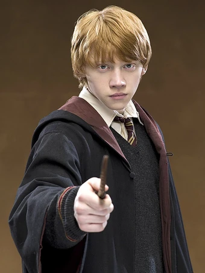
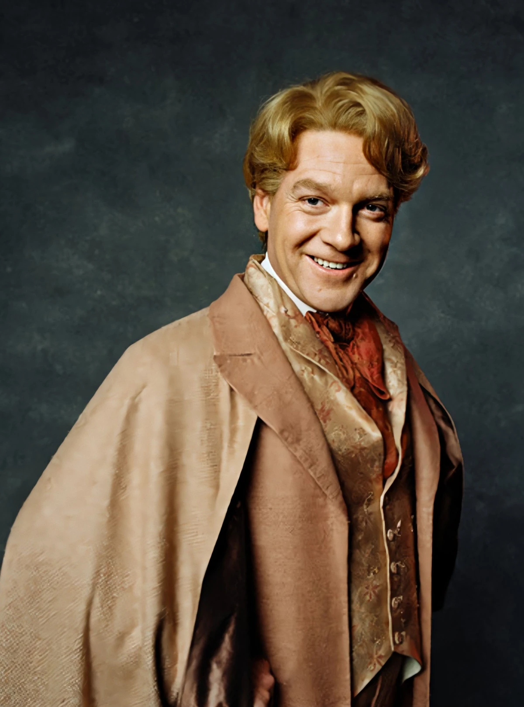
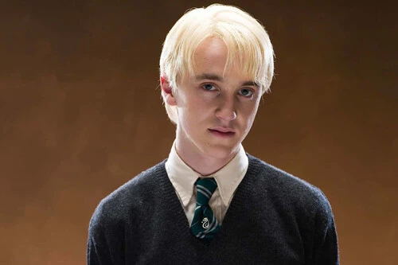
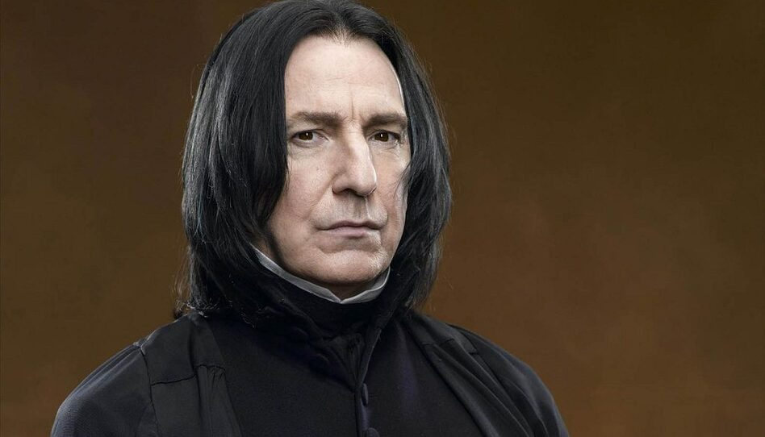
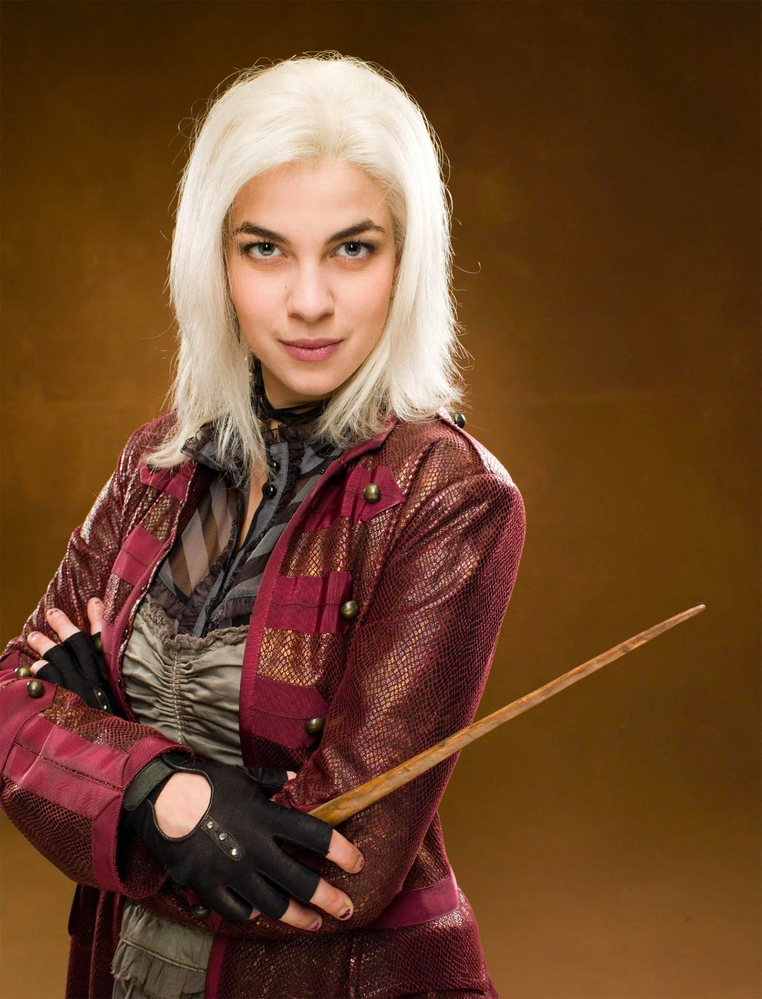
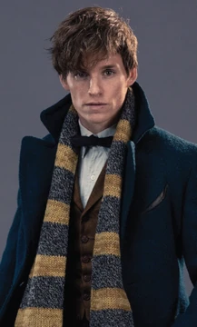
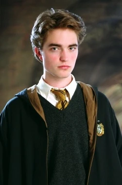

The Four Houses of Hogwarts
Upon arrival at Hogwarts, every first-year student participates in the Sorting Ceremony, a time-honored tradition dating back to the school's founding. The enchanted Sorting Hat, which once belonged to Godric Gryffindor himself, is placed upon each student's head and determines which of the four houses they will join for their seven years at the school.
Each house has its own unique identity, values, and history. While the Hat primarily considers a student's innate qualities and potential, it also takes into account their preferences and desires. The houses compete throughout the year for the House Cup, earning or losing points based on academic achievement, rule-following, and demonstrations of house values.
Your house becomes your family at Hogwarts. You'll share a common room, dormitories, and many classes with your fellow house members. The bonds formed within your house often last a lifetime, creating friendships and connections that extend far beyond your school years. Now, let us explore each of the four noble houses in detail...
⚔️ Gryffindor
"Brave at Heart"

Gryffindor values bravery, nerve, chivalry, and daring. Founded by the bold Godric Gryffindor, this house is represented by a lion and its colors are scarlet red and gold. The ghost of Gryffindor is Nearly Headless Nick.
Notable Members

Harry Potter
Hermione Granger

Ron Weasley
🦅 Ravenclaw
"Wit Beyond Measure"

Ravenclaw prizes wisdom, intelligence, creativity, and learning. Founded by Rowena Ravenclaw, this house is represented by an eagle and its colors are blue and bronze. The ghost of Ravenclaw is The Grey Lady.
Notable Members
Luna Lovegood

Cho Chang

Gilderoy Lockhart
🐍 Slytherin
"Pure-blood Ambition"

Slytherin values ambition, cunning, leadership, and resourcefulness. Founded by Salazar Slytherin, this house is represented by a serpent and its colors are emerald green and silver. The ghost of Slytherin is The Bloody Baron.
Notable Members

Draco Malfoy

Severus Snape
Tom Riddle
🦡 Hufflepuff
"Just and Loyal"

Hufflepuff values hard work, patience, loyalty, and fair play. Founded by Helga Hufflepuff, this house is represented by a badger and its colors are yellow and black. The ghost of Hufflepuff is The Fat Friar.
Notable Members

Nymphadora Tonks

Newt Scamander

Cedric Diggory